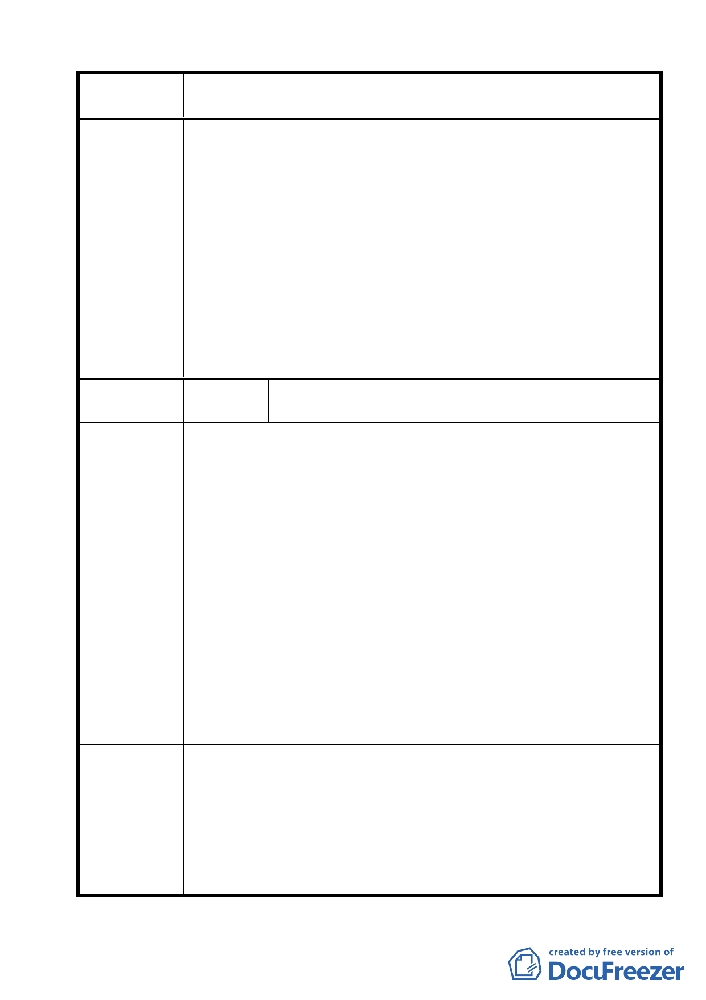

案名
委員會議
決議
編號
陳情理由
建議辦法
委員會議
決議
變更臺北市士林區陽明山山仔后地區第二種住宅區為特定住宅區
細部計畫案
頃以上，宜留設面積 10％作為公園、綠地、廣場、體育場、兒
童遊樂場等，且其整各地區有關交通、人行道、坡地開發、水
土保持、建築現等相關規定，宜清楚載明於此計畫中，俾利全
盤規劃。
1.有關本項陳情市府業說明新安段一小段屬保護區變更為住宅區
編號住六之三，非屬本案計畫範圍。另自來水事業處為滿足陽明
山地區開發用水需求，已擬訂「陽明山平地水源分段加壓上送工
程計畫」。至於建業路北段是否仍有闢建需要，將另案檢討辦理。
2.本案除市府本次會議所送修正計畫書第 2-20 頁（四）文字修正
為「建築基地地面高度設計：建築基地地面設計以維持原地形
地面為原則，但經整地後基地地面高度不得超過 1.2 公尺」外，
其餘依市府本次會議所送修正計畫書內容通過。
9
陳情人
黃清溪等 50 位居住於山仔后建業路地區
居民
1.建業路規劃多年且已徵收完畢，卻遲遲未全線開通，多數現行
既成巷道皆由居民自行開路通行，但此區有文化大學、華崗藝
校及歐洲語文學校等多人及車輛通行，其安全及便利性實在非
常堪慮。
2.新安段一小段保變住地區大多是平地，且無產權分散、地勢陡
峭問題，且大多數居民（有 50 位居民）已聯合簽名建請將本區
納入山仔后地區細部計畫範圍。
3.經查 83 年 10 月 7 日臺北市保護區變更為住宅區開發要點規定：
開發區面積小而緊鄰已公告實施細部計畫地區，臺北市政府得
將該等地區納入緊鄰地區之細部計畫通盤檢討案作整體規劃，
以利節省市府都市開發經費。
1.計畫範圍內建業路應依其規劃，早日興建完成，使建業路全線
通車，提升社區生活品質。
2.請將新安段一小段山仔后地區（保變住地區）納入本計畫範圍，
利用此次山仔后計畫案，一併整體規劃。
1.有關本項陳情市府業說明新安段一小段屬保護區變更為住宅區
編號住 6-3，非屬本案計畫範圍。至於建業路北段是否仍有闢建
需要，將另案檢討辦理。
2.本案除市府本次會議所送修正計畫書第 2-20 頁（四）文字修正
為「建築基地地面高度設計：建築基地地面設計以維持原地形
地面為原則，但經整地後基地地面高度不得超過 1.2 公尺」外，
其餘依市府本次會議所送修正計畫書內容通過。
20